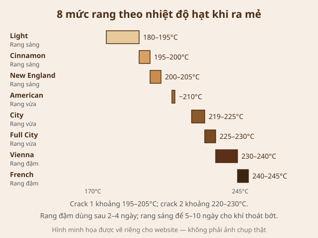

Mức rang cà phê: rang nhạt, rang vừa, rang đậm — chọn theo cách pha
Tác giả: Nguyễn Trung Đức
Cùng một loại hạt, rang nhạt cho ra ly chua thanh và thơm hương trái cây, rang đậm cho ra ly đắng rõ và thơm mùi khói. Mức rang là một trong những yếu tố quyết định vị của ly cà phê nhiều nhất, nhưng khi đứng trước kệ hàng, nhiều người chỉ nhìn thấy hai chữ "rang vừa" hoặc "rang đậm" trên túi mà không biết chúng nghĩa là gì, và càng không biết mức nào hợp với chiếc phin ở nhà mình.
Bài này giải thích mức rang là gì, hạt thay đổi ra sao trong lò rang, hai tiếng nứt crack 1 và crack 2 có ý nghĩa gì, và cách chọn mức rang theo từng cách pha: phin, espresso, cold brew, pha lọc. Các khoảng nhiệt độ trong bài đều là khoảng tham khảo, vì mỗi máy rang đọc nhiệt độ khác nhau vài độ.
Mức rang là gì
Mức rang nói lên hạt đã đi xa tới đâu trong lò: nhân xanh vào lò càng lâu, nhiệt càng cao thì hạt càng sẫm màu. Người ta thường xếp các mức rang thành 8 bậc, gom thành 3 nhóm lớn — rang sáng, rang vừa và rang đậm.
Mức rang làm thay đổi rõ nhất ba thứ trong ly: độ chua, độ đắng và hương thơm. Ở rang nhạt, vị chua sáng và mùi trái cây còn nguyên; ở rang đậm, vị đắng, mùi khói và caramel cháy chiếm chỗ trước. Rang sáng để lộ nét riêng của hạt — vùng trồng, giống, cách sơ chế — còn rang đậm để hương tạo ra trong lò lấn át, cho ly đậm đà, đắng rõ và ít chua.
Vì vậy, chọn mức rang phù hợp quan trọng không kém việc chọn hạt. Một hạt Arabica chất lượng cao rang quá đậm sẽ mất gần hết hương hoa quả vốn có của nó, trong khi một hạt Robusta rang quá nhạt có thể cho ly chua gắt và thiếu thân vị.
Hạt thay đổi ra sao trong lò rang
Một mẻ rang thường có ba chặng. Chặng đầu, hạt được sấy khô: nước trong nhân bay bớt, màu chuyển từ xanh sang vàng, mùi cỏ khô dần thành mùi bánh mì mới nướng. Chặng hai, ở khoảng 150–200 độ C, đường trong hạt gặp axit amin trong phản ứng Maillard, tạo màu nâu và hàng trăm chất thơm — trong đó có 2-furfurylthiol, một trong những chất tạo mùi rang đặc trưng. Cũng ở khoảng 170–200 độ C, đường tự phân hủy dưới nhiệt (caramel hoá), làm hạt nâu thêm và sinh ra mùi thơm cùng một phần vị chua. Chặng ba tính từ tiếng nứt đầu tiên đến lúc xả mẻ. Xả càng sớm sau crack 1 thì hạt càng sáng; để mẻ chạy tới crack 2 thì hạt càng đậm.
Crack 1 là tiếng nứt lách tách đầu tiên trong lò, khi hơi nước, khí CO₂ và các chất bay hơi tích trong hạt dồn đủ áp lực để làm vỡ vách tế bào. Sau mốc này, hạt phồng lên gần gấp đôi, chuyển sang màu nâu nhạt và nhẹ đi khoảng 5%. Crack 2 đến sau, tiếng nứt nhỏ hơn và dồn dập hơn: lúc này cellulose trong vách tế bào bắt đầu vỡ ra, mặt hạt có thể bóng dầu, và hạt đã mất khoảng 13% khối lượng so với lúc vào lò.
Nhiệt độ cuối chưa nói hết câu chuyện — thời điểm xả mẻ cũng quyết định không kém. Cùng một nhiệt độ xả 215°C, ly vẫn khác nhau rõ rệt tùy mẻ phát triển bao lâu sau crack 1: mẻ dừng ở 90 giây cho một ly, mẻ kéo tới 3 phút cho một ly khác — chua, ngọt, thân vị đều thay đổi theo. Phần lớn độ rang được quyết định ở quãng giữa crack 1 và crack 2: rang càng lâu, mùi rang càng lấn mùi hạt.
Độ đặc của hạt cũng ảnh hưởng tới cách hạt nhận nhiệt. Một nghiên cứu năm 2021 trên Arabica ở Nepal, được Tạp chí Roast dẫn lại, so sánh hai độ cao: ở 1.400–1.500m, mật độ trung bình khoảng 687,5 kg/m³; ở 800–900m, chỉ khoảng 619,75 kg/m³ — chênh lệch khoảng 11%. Ở độ cao lớn, khí hậu mát khiến quả chín chậm nên hạt đặc chắc hơn; hạt đặc lúc đầu nhận nhiệt chậm, nhưng một khi đã nóng thì dẫn nhiệt vào lõi tốt hơn.
Hai mốc crack 1 và crack 2: các nguồn ghi khác nhau
Nhiệt độ của crack 1 và crack 2 là một trong những chỗ các nguồn ghi không giống nhau, và bạn cần biết điều này để khỏi hoang mang khi đọc nhiều tài liệu. iPOS ghi crack 1 ở khoảng 195–200 độ C và crack 2 ở khoảng 220–225 độ C. Mayrangcafe, trang của xưởng chế tạo máy rang BACCO, ghi crack 1 thường bắt đầu quanh 196 độ C và crack 2 quanh 224 độ C trên đầu dò hạt. FLEUR, dẫn theo Viện Nghiên cứu Cà phê (Coffee Research Institute), ghi crack 1 ở khoảng 205 độ C và crack 2 ở khoảng 225–230 độ C.
Khoảng chênh này là bình thường: con số đầu dò hạt hiển thị còn tùy đầu dò đặt ở đâu và dày bao nhiêu, mẻ rang nặng hay nhẹ, lò tăng nhiệt nhanh hay chậm. Mỗi máy lệch nhau vài độ, nên người rang thường lấy mốc crack 1 đo được trên chính máy của mình làm gốc rồi cộng thêm một khoảng nhiệt để đạt mức mong muốn, thay vì bê nguyên con số của máy khác. Với người mua cà phê để pha ở nhà, điều cần nhớ không phải là con số chính xác từng độ, mà là thứ tự: crack 1 đến trước, crack 2 đến sau, và mức rang nằm ở vị trí ra mẻ so với hai mốc này.
Một cách đo mức rang khác là thang màu Agtron, thang số đo màu hạt rang mà tạp chí Coffee Review dùng. Trên thang này, số càng lớn thì hạt càng nhạt. FLEUR ghi lại thang này như sau: rang nhạt có Agtron trên 80, vừa nhạt 70–80, vừa 60–70, đậm vừa 50–60, đậm 40–50. Thang Agtron đo màu hạt khách quan hơn mắt thường, nhưng người mua lẻ ít khi thấy con số này trên túi cà phê bán lẻ ở Việt Nam.
Bảng 8 mức rang: nhiệt độ, màu hạt và vị
Bảng dưới đây gom 8 mức rang theo cách chia của iPOS: tên mức và khoảng nhiệt độ lấy theo iPOS, còn cột màu hạt và cột vị theo mô tả của iPOS, Mayrangcafe và FLEUR. Nhiệt độ là nhiệt độ hạt khi ra mẻ, đọc trên đầu dò, mỗi máy lệch nhau vài độ.
| Nhóm | Mức rang | Nhiệt độ hạt khi ra mẻ | Màu và bề mặt hạt | Vị nổi bật |
|---|---|---|---|---|
| Rang sáng | Light | 180–195°C | Màu nâu vàng nhạt, mặt khô ráo, chưa thấy dầu | Vị chua nổi rõ, thoảng mùi cỏ và ngũ cốc, hậu hơi gắt |
| Rang sáng | Cinnamon | 195–200°C | Màu nâu vàng, gần với màu vỏ quế | Chua sắc nét, thơm mùi hoa và trái cây, ít đắng |
| Rang sáng | New England | 200–205°C | Màu nâu nhạt đều, mặt hạt còn khô | Chua thanh kèm chút ngọt, cân bằng hơn hai mức trên |
| Rang vừa | American | Khoảng 210°C | Màu nâu ở mức giữa | Chua dịu, ngọt vừa phải, thoảng mùi hạt dẻ |
| Rang vừa | City | 219–225°C | Màu nâu đều khắp hạt, mặt vẫn khô | Vị cân bằng ba phía chua–ngọt–đắng, ngọt kiểu caramel, đắng nhẹ |
| Rang vừa | Full City | 225–230°C | Màu nâu sẫm, có lúc thấy vài đốm dầu | Đắng rõ hơn mức City, mùi chocolate, thân vị dày dặn |
| Rang đậm | Vienna | 230–240°C | Màu nâu đậm, mặt hạt phủ một lớp dầu mỏng | Đắng đậm, ngọt như đường cháy, thân vị đầy đặn |
| Rang đậm | French | 240–245°C | Màu nâu gần đen, mặt hạt bóng dầu | Đắng mạnh, mùi khói rõ, hậu vị kéo dài |
Có một điểm cần lưu ý khi đọc bảng này. Mayrangcafe chia mức rang thành 4 mức lớn với khoảng nhiệt độ khác với bảng 8 mức của iPOS: Light 196–205 độ C, Medium 210–220 độ C, Medium-dark 222–230 độ C, Dark 230–245 độ C. Khoảng Light 196–205 độ C của Mayrangcafe trùng với hai mức Cinnamon và New England của iPOS, còn khoảng Medium 210–220 độ C trùng với mức American và đầu mức City. Hai nguồn không mâu thuẫn nhau mà chỉ chia khác nhau: iPOS chia nhỏ thành 8 mức, Mayrangcafe gom thành 4 mức. Khi một túi cà phê ghi "Light", bạn nên hiểu đó là khoảng rang sáng nói chung, chứ không phải một con số nhiệt độ cố định. Mayrangcafe cũng nhắc rõ: "medium" của xưởng này có thể là "light" của xưởng khác. Vì vậy, khi mua, bạn nên hỏi thêm nhiệt độ ra mẻ và thời gian phát triển nếu xưởng công bố, thay vì chỉ gọi tên mức rang theo cảm tính.

Bảng tám mức rang theo nhiệt độ hạt khi ra mẻ.
Người muốn nếm rõ nét riêng từng vùng trồng — Ethiopia, Kenya hay Cầu Đất — thường chọn rang sáng, vì rang nhẹ giữ lại nhiều đặc tính gốc nhất. Đổi lại, rang sáng khó pha hơn: hạt cứng, chiết chậm, chỉ cần sai một chút là ly chua gắt ngay. Rang vừa là điểm giữa: chua, ngọt, đắng đều có mặt vừa đủ nên dễ uống nhất, nhiều quán lấy làm mức rang chính. Cà phê sữa, bạc xỉu hay phin truyền thống thường đi với rang đậm: vị đắng đậm đủ sức nổi lên sau khi pha cùng sữa đặc. Nhưng rang quá tay thì vị khét lấn hết nét riêng của hạt.
Vị đắng cũng đổi tính theo mức rang. Theo FLEUR, ở rang nhạt và rang vừa, vị đắng chủ yếu đến từ lacton của axit chlorogenic; rang càng đậm, các chất này càng chuyển thành phenylindan — nhóm chất cho vị đắng gắt hơn. Vì vậy, rang đậm không chỉ đắng hơn mà còn đắng theo kiểu gắt hơn, nhất là khi rang quá tay. Ở hai đầu thang, Coffee Review lưu ý rang quá non có thể để lại vị bột, vị gỗ, vị ngũ cốc, còn rang quá già thường cho vị cháy và vị mỏng.
Chọn mức rang theo cách pha
Mỗi cách pha lấy hương vị ra khỏi hạt theo một kiểu riêng, nên mức rang hợp với cách này chưa chắc hợp với cách khác. Bảng dưới đây đối chiếu gợi ý mức rang với từng cách pha theo iPOS, Mayrangcafe và FLEUR.
| Cách pha | Mức rang thường hợp | Vì sao hợp |
|---|---|---|
| Phin, uống với sữa đặc và đá | Đậm vừa đến đậm (Full City, Vienna) | Phin cho nước đi chậm nên chiết được vị đậm, hậu đắng ngọt và thân vị dày, đủ sức đứng sau sữa đặc và đá |
| Phin, uống đen nóng, thích vị nhẹ | Vừa (City) | Còn giữ vị ngọt và chua nhẹ; Robusta tốt rang vừa vẫn pha phin rất ngon |
| Espresso | Vừa (City, Full City) | Chiết rất nhanh nên cần vị ngọt, tròn mà vẫn có chiều sâu; rang sáng dễ ra ly chua gắt nếu chưa quen chỉnh máy |
| Espresso pha sữa | Vừa đậm (Full City, Vienna) | Vị chocolate, thân vị dày, ít chua, đứng được sau sữa |
| Cold brew | Sáng đến vừa (American, City) | Ngâm lạnh lâu làm vị dịu lại, bớt chua và bớt đắng gắt; rang vừa cho vị mượt, thoảng hương cacao, còn rang sáng nổi hương trái cây |
| Pour over (V60, Chemex) | Sáng đến vừa (Cinnamon đến City) | Giữ được hương hoa và trái cây, hạt sạch và rõ vị; rang quá đậm sẽ lấn át các tầng hương |
Khi đổi mức rang, nhớ chỉnh theo độ cứng và tốc độ chiết của hạt. Hạt rang sáng cứng hơn và chiết chậm hơn nên cần xay mịn hơn và rót nước nóng hơn. Hạt rang đậm xốp hơn và chiết nhanh hơn nên cần xay thô hơn, rót nước mát hơn. Nếu giữ nguyên công thức mà đổi mức rang, ly sẽ lệch chua hoặc lệch đắng.
Cà phê vừa rang xong cần nghỉ xả khí (degas). Khi mới rang, hạt còn giữ nhiều khí CO₂ sinh ra trong quá trình rang; khí này thoát dần trong những ngày sau. Mayrangcafe ghi rõ: hạt rang đậm xả khí trong khoảng 2–4 ngày, hạt rang sáng cần khoảng 5–10 ngày. Nếu pha quá sớm, khí CO₂ làm bọt phồng lên bất thường và vị dễ chua. Nếu để quá lâu thì hạt mất dần hương, đặc biệt với rang sáng.
Rang tẩm bơ theo lối truyền thống
Ở Việt Nam, ngoài rang mộc là chỉ rang hạt cà phê không thêm gì, còn có lối rang tẩm theo truyền thống. FLEUR kể chuyện ở Buôn Ma Thuột, nơi có nhà vẫn mua cà phê nhân về rang xay tại chỗ; gần cuối mẻ, người ta thêm một chút bơ hoặc mỡ gà, kèm chút ngô để nước pha sánh hơn. Lối rang truyền thống này cho hạt bóng và thơm mùi bơ, quen thuộc với nhiều người uống cà phê Việt, nhưng hạt rang tẩm bơ dễ dính dầu trong cối xay và khó vệ sinh, đồng thời lớp bơ có thể làm mờ nét vị của hạt gốc.
Bạn cần phân biệt rang tẩm bơ với rang đậm. Rang đậm là rang hạt lâu hơn, tới crack 2, để vị đắng và hương khói nổi lên. Rang tẩm bơ là thêm bơ, đường hoặc mỡ vào cuối mẻ rang, để hạt bóng và nước pha sánh hơn. Một hạt rang tẩm có thể có màu rất đậm và bóng dầu, nhưng màu đó đến từ bơ chứ không chỉ từ mức rang. Khi mua cà phê, bạn nên hỏi rõ người bán là rang mộc hay rang tẩm, vì hai loại cho vị khác nhau và cách pha cũng khác nhau đôi chút. Cách nhận biết rang mộc và rang tẩm có trong Đọc nhãn túi cà phê: giống, vùng trồng, ngày rang.
Sai lầm thường gặp khi chọn mức rang
Những lỗi thường gặp khi chọn mức rang
- Pha ngay khi hạt vừa rang xong. Hạt mới rang cần thời gian xả khí: rang đậm khoảng 2–4 ngày, rang sáng khoảng 5–10 ngày. Pha quá sớm dễ ra ly chua và bọt phồng bất thường.
- Dùng chung một mức rang cho mọi món. Một mức rang không thể vừa giữ hương cho pour over vừa đủ đắng cho phin sữa đá. Nên chọn tối đa 2–3 mức rang và ghi rõ mức rang trên menu và bao bì.
- Áp nguyên nhiệt độ của một máy rang khác. Mỗi lò có cấu trúc và đầu dò khác nhau; một con số 220 độ C trên máy này chưa chắc tương đương trên máy khác. Cần kiểm chứng trên chính máy và mẻ của mình, vì chênh vài độ đã có thể đổi nhóm rang.
- Dùng rang đậm để che lỗi hạt. Rang đậm làm mùi rang lấn át nét riêng của hạt, nên có thể giấu được hạt lỗi. Nhưng nếu hạt lỗi nhiều, ly vẫn có vị khét và đắng gắt.
- Gọi tên mức rang theo cảm tính. Mức rang nên được ghi bằng tên mức kèm khoảng nhiệt độ hoặc giá trị đo màu Agtron, không gọi theo cảm tính. Tên gọi "rang vừa" của xưởng này có thể tương đương với "rang sáng" của xưởng khác.
Một sai lầm nữa của người mua lẻ là chọn mức rang theo màu bột. Đừng lấy màu bột làm thước đo độ ngon: bột sẫm màu chưa chắc đã ngon, nó có thể chỉ là rang đậm, rang tẩm bơ, hoặc hạt đã rang quá tay. Khi mua, bạn nên nhìn hạt nguyên trước khi xay: hạt rang sáng có màu nâu nhạt và bề mặt khô, hạt rang đậm có màu nâu sẫm và bề mặt bóng dầu. Nếu mua bột xay sẵn mà không thấy hạt, bạn nên hỏi người bán mức rang và ngày rang, hai thông tin quan trọng hơn màu bột nhiều.
Checklist chọn mức rang cho lần mua tới
Trả lời ba câu hỏi trong mẫu tự làm dưới đây, rồi đối chiếu với bảng chọn theo cách pha ở trên.
| Câu hỏi | Câu trả lời của bạn | Mức rang nên thử |
|---|---|---|
| Bạn pha bằng cách nào là chính? | Phin / Espresso / Pour over / Cold brew | Phin: đậm vừa đến đậm; Espresso: vừa; Pour over: sáng đến vừa; Cold brew: sáng đến vừa |
| Bạn uống với sữa đặc và đá, hay uống đen nóng? | Sữa đá / Đen nóng | Sữa đá: đậm vừa đến đậm; Đen nóng: vừa |
| Bạn thích vị chua thanh và hương trái cây, hay vị đắng đậm và hương chocolate? | Chua thanh / Đắng đậm | Chua thanh: sáng đến vừa; Đắng đậm: đậm vừa đến đậm |
| Túi cà phê ghi ngày rang cách đây bao nhiêu ngày? | Dưới 4 ngày / 4–10 ngày / Trên 10 ngày | Dưới 4 ngày: để hạt nghỉ thêm rồi mới pha; 4–10 ngày: pha ngay; Trên 10 ngày: dùng nhanh, đừng mua thêm |
| Bạn có thấy hạt bóng dầu không? | Khô / Lấm tấm dầu / Bóng dầu | Khô: rang sáng đến vừa; Lấm tấm dầu: đậm vừa; Bóng dầu: đậm, hoặc rang tẩm bơ — hỏi lại người bán |
Kết luận
Không có mức rang nào đúng cho mọi ly. Bạn thích ly thanh, chua sáng và hương trái cây thì chọn rang sáng; bạn thích ly cân bằng, dễ uống thì chọn rang vừa; bạn thích ly đắng đậm cho cà phê sữa thì chọn rang đậm. Khi mua, hãy hỏi rõ tên mức rang, khoảng nhiệt độ hoặc giá trị Agtron, và ngày rang. Khi đổi mức rang, chỉnh lại độ xay và nhiệt độ nước. Và khi hạt vừa rang xong, nhớ để hạt xả khí vài ngày trước khi pha.
Nguồn tham khảo
- iPOS, "8 cấp độ rang cà phê: Đặc điểm, hương vị đặc trưng từng loại" — 8 mức rang chia thành 3 nhóm: Light 180–195 độ C, Cinnamon 195–200 độ C, New England 200–205 độ C, American khoảng 210 độ C, City 219–225 độ C, Full City 225–230 độ C, Vienna 230–240 độ C, French 240–245 độ C; crack 1 khoảng 195–200 độ C, crack 2 khoảng 220–225 độ C; phin hợp Full City và Vienna, cold brew hợp American và City, pour over hợp Cinnamon đến City (truy cập 23/11/2026): https://ipos.vn/?p=164177
- Mayrangcafe (BACCO), "Mức rang cà phê light, medium, dark và nhiệt độ hạt" — Light xả mẻ khi hạt khoảng 196–205 độ C, ngay sau crack 1; Medium khoảng 210–220 độ C; Medium-dark khoảng 222–230 độ C; Dark khoảng 230–245 độ C; crack 1 thường bắt đầu quanh 196 độ C, crack 2 quanh 224 độ C; rang đậm dùng được sau 2–4 ngày, rang sáng chờ 5–10 ngày cho khí thoát bớt; phin truyền thống thường dùng medium-dark đến dark (truy cập 23/11/2026): https://mayrangcafe.vn/muc-rang-ca-phe-nhiet-do/
- FLEUR, "Độ rang cà phê: mật độ hạt, crack 1, crack 2" — crack 1 ở khoảng 205 độ C, crack 2 ở khoảng 225–230 độ C theo Viện Nghiên cứu Cà phê; phản ứng Maillard trong khoảng 150–200 độ C, đường caramel hoá từ khoảng 170 độ C đến 200 độ C; crack 1 hạt nở gần gấp đôi, mất khoảng 5% khối lượng; tiếp tục rang mất khoảng 13% khối lượng; thang Agtron: rang nhạt trên 80, vừa nhạt 70–80, vừa 60–70, đậm vừa 50–60, đậm 40–50; nghiên cứu năm 2021 trên Arabica ở Nepal: mật độ trung bình khoảng 687,5 kg/m³ ở độ cao 1.400–1.500m, khoảng 619,75 kg/m³ ở độ cao 800–900m, chênh lệch khoảng 11%; phin hợp rang đậm vừa đến đậm (truy cập 23/11/2026): https://www.fleur.vn/tap-chi/mat-do-hat-va-do-rang-ca-phe/